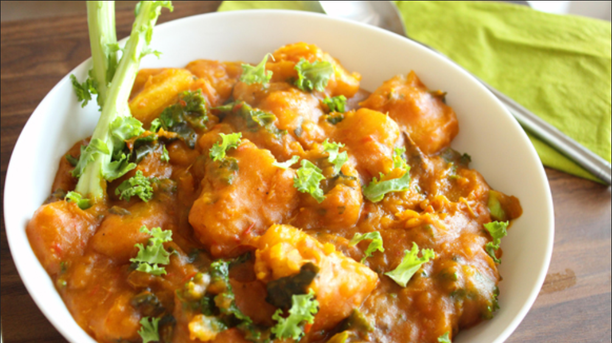

Yam porridge recipe

Description
This recipe is also known as "Asaro". Made with Yam, vegetables, your choice of seafood(Titus fish, shrimps OR crayfish). Makes for a great dinner idea.
Ingredients
- Yam
- Palm Oil
- 1 smoked fish(titus/mackerel) OR Dry fish
- 1 tablespoon ground crayfish
- 1 medium onion
- Fresh green vegetable e.g Pumpkin, Parsley or Scent leaf (Effirin or Nchanwu)
- Habanero or Chilli Pepper
- Salt to taste
- Onga cubes(if prefered)
Steps
- Peel & cut the yam tuber into medium sizes. Wash the yam cubes and place in a sizeable pot.
- Wash & cut the onions into tiny pieces. Grind / Blend the chilli pepper. Set these aside. If using dry fish, soak and pick the bones at this time.
- Pour enough water to cover the yam cubes and start cooking at medium to high heat. If you are using dry fish, add it now.
- When the yams have got a good boil, add the onions, ground crayfish, pepper, Onga cubes, palm oil & the smoked fish.
- Cover the pot and continue cooking till the yam is done. Add salt to taste and stir very well. Cook at high heat for about 5 minutes.
- Add the green vegetable, stir and leave to stand for about 3 minutes then serve!